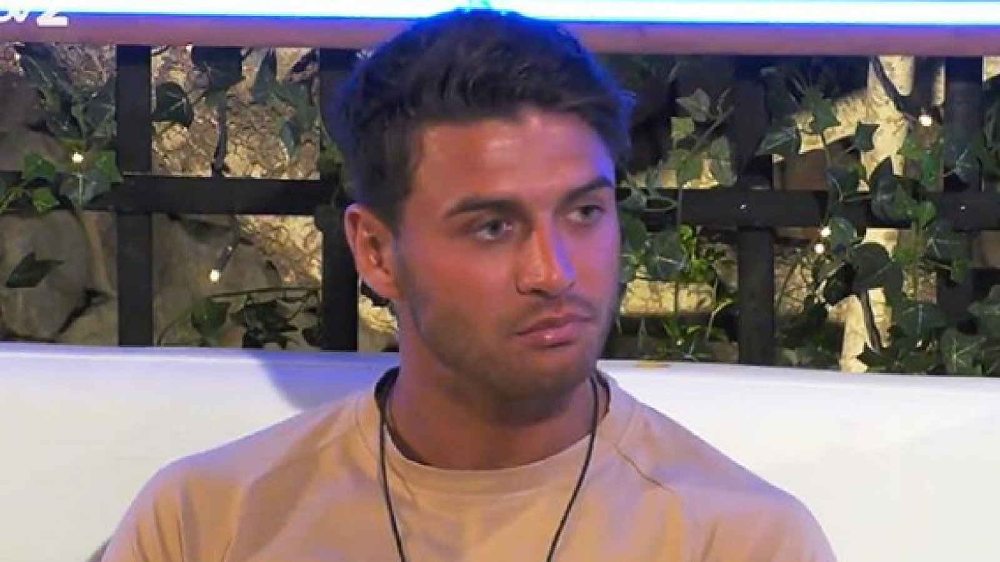

The makers of Love Island say they will offer therapy to all contestants following the deaths of two former stars.
The body of 26-year-old Mike Thalassitis, who appeared in the 2017 series, was found in a north London park on Saturday after police were called to reports of a man found hanged, while Sophie Gradon, 32, who had taken part the year before, was found dead in June last year.
Since their deaths the clamour for TV reality shows to help participants to deal with psychological effects of taking part has grown, with the Health Secretary Matt Hancock saying they have a duty to care for contestants after they become famous.
Love Island said it had undertaken a review six months ago to evaluate the after-care it was providing.
The show said it would now offer support to all contestants rather than just those who ask for it.
The care will focus on helping contestants with social media and financial management.
A statement from the show said: "This review has led us to extend our support processes to offer therapy to all Islanders and not only those that reach out to us.